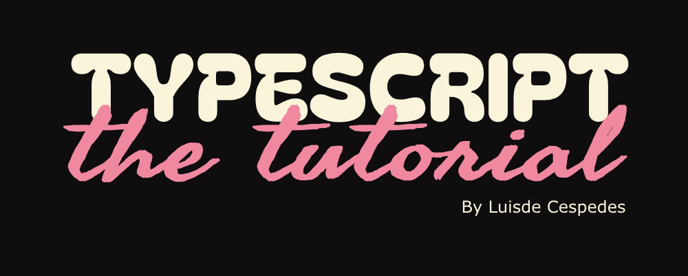

⚡ JavaScript is Cool, but TypeScript is the Future⚡
TYPESCRIPT :
A NEW ERA IN JAVASCRIPT 🚀
In the early days of JavaScript, developers faced a challenging reality: dynamic types and runtime errors made code hard to manage and debug. With projects growing in size and complexity, the need for a more robust solution became evident. Enter TypeScript, a powerful superset of JavaScript designed to bring static typing and enhanced tooling to the table.
By integrating TypeScript into your workflow, you embark on a journey to make your codebase more predictable and reliable. From the initial installation to converting your existing JavaScript code, TypeScript promises to transform how you write and think about code, making it easier to catch errors early and maintain a clean, organized codebase.
Chapter 1:
Setting the Stage 🎭
Before we dive into the magic of TypeScript, we need to prepare our environment. Think of this as sharpening your tools before starting a masterpiece.
📦 Installation: The First Spell
npm install -g typescript
tsc --version
Congratulations! You've summoned TypeScript into your system! ✨
Chapter 2:
The Evolution Begins ⚡
Let's start small – just a variable.
// JavaScript
let myVariable = "Hello, JavaScript!";
// TypeScript
let myVariable: string = "Hello, TypeScript!";
💡 Notice the : string? That's a type annotation, and it tells TypeScript that myVariable is always going to be a string.
Chapter 3:
Organized Magic 🪄
// JavaScript
let numbers = [1, 2, 3, 4, 5];
// TypeScript
let numbers: number[] = [1, 2, 3, 4, 5];
💡 The number[] annotation ensures TypeScript will scream at you if you accidentally try to put anything but numbers into that array.
Chapter 4:
Stronger Spells 🧙♂️
// JavaScript
function greet(name) {
return "Hello, " + name;
}
// TypeScript
function greet(name: string): string {
return "Hello, " + name;
}
🔮 TypeScript guarantees that name is always a string, and it promises that the function will return a string, too!
Chapter 5:
Typed Creations 🏗️
// JavaScript
let person = {
name: "Alice",
age: 25
};
// TypeScript
let person: { name: string; age: number } = {
name: "Alice",
age: 25
};
✨ TypeScript ensures that every person object has a name that's a string and an age that's a number.
Chapter 6:
Type Inference 🧠
TypeScript is smart enough to figure out types on its own in many cases. This is called type inference.
let magicNumber = 42; // TypeScript infers this is a number
let wizard = "Merlin"; // TypeScript infers this is a string
// TypeScript knows the return type is a string
function castSpell(spell: string) {
return `Casting ${spell}!`;
}
🎩 Type inference helps keep your code clean while still providing type safety!
Chapter 7:
Interfaces 🏗️
Interfaces allow you to define the structure of objects.
interface Wizard {
name: string;
age: number;
spells: string[];
}
let gandalf: Wizard = {
name: "Gandalf",
age: 2019,
spells: ["You shall not pass!", "Fly, you fools!"]
};
🧙♂️ Interfaces help you create consistent structures across your codebase!